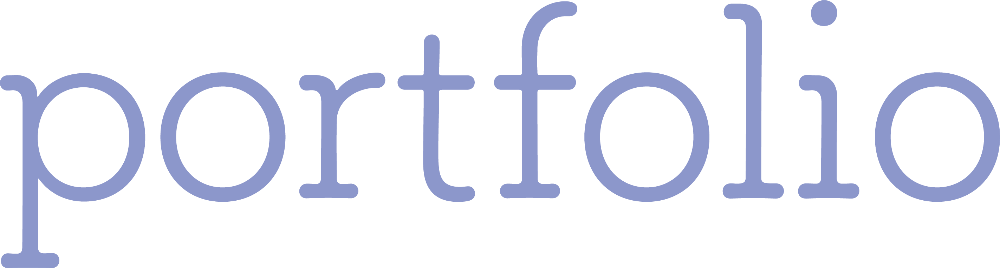
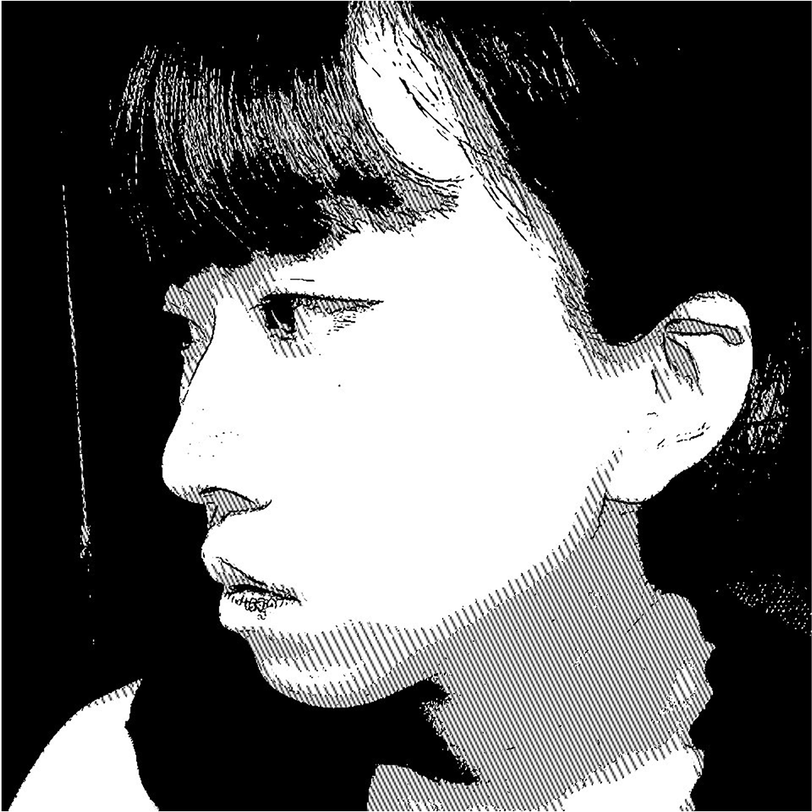
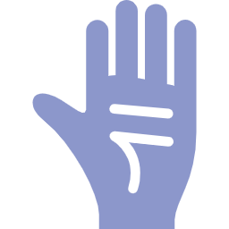
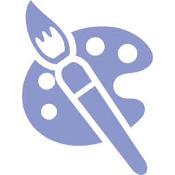
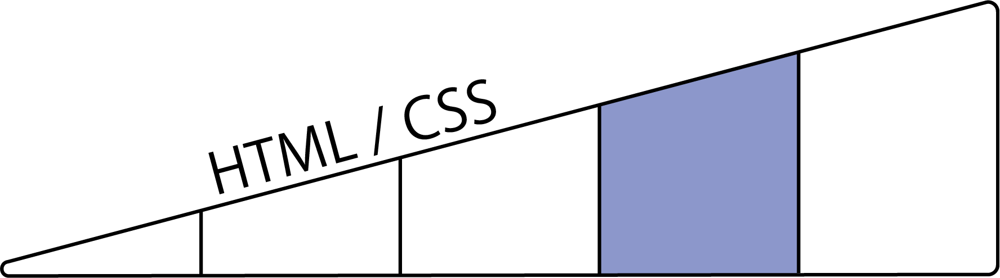
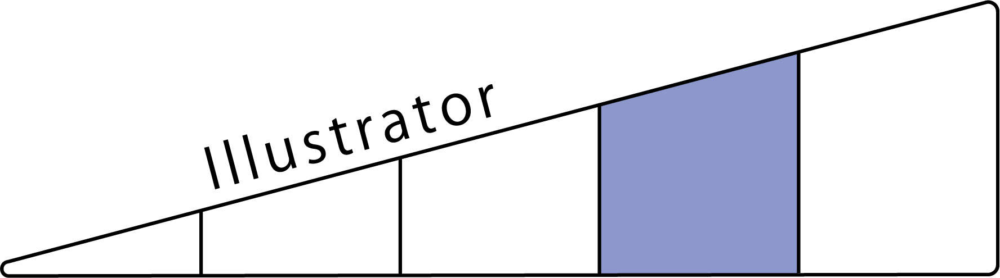
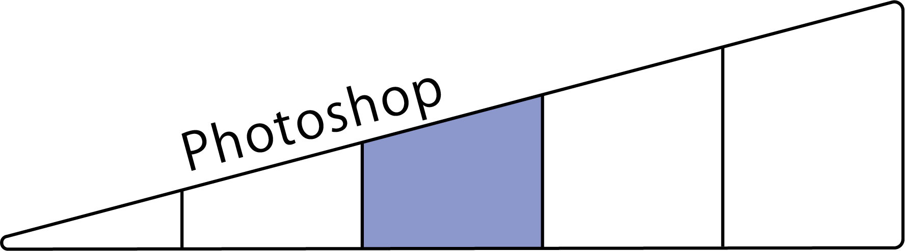
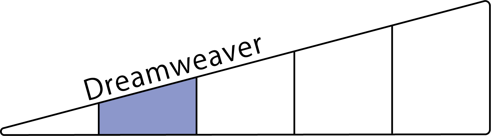
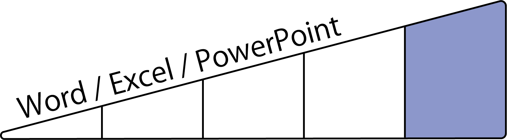

安村 伊代
大阪生まれ/大阪育ち/大阪在住の生粋の大阪人。
大阪の大学４年生 大学では心理学を専攻。
就活を進める中でデザインに携わりたいと思うようになり，
多くの人に影響を与えられるWebデザイナーを志すことに。
就活を一時中断し，オンラインスクールでWebデザインについて学習。
現在はhtml/css/JavaScriptやillustrator/photoshopの独学をしつつ，再び就活中。
Webデザインのconcept
| sympathy | posibility |
|---|---|
| 様々な人たちが理解できるよう，思いやりをもってデザインする | 常に学ぶ姿勢を忘れず，可能性を追求してデザインする |
×
strength
do flawlessly
何事も器用にこなします。動画制作や音の編集など，ある程度できるまで習得しています。
think for myself
自分で考えてから行動します。壁が生じても，まずは自分で何とかしようと模索します。
drawing illustration
1960年代風のカラフルな配色で，単純な線からなるイラストが得意です。
taking photographs
対象が美しく映るよう心がけて撮ります。身近な自然を撮るのが好きです。
skkils





※あくまで自己評価です。
works
↑クリックしてください。
contact
mail：yasuiyo.milk@gmail.com tel：080-3859-7059
snsは現在しておりません。はじめたら載せます。